Dec 2021
| Sun | Mon | Tue | Wed | Thu | Fri | Sat |
|---|---|---|---|---|---|---|
| 1 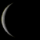 |
2 
|
3 |
4 |
|||
| 5 |
6 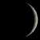 |
7 |
8 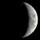 |
9 |
10 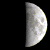 |
11 |
| 12 |
13 |
14 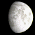 |
15 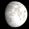 |
16 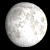 |
17 |
18 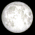 |
| 19 |
20 |
21 |
22 
|
23 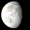 |
24 |
25 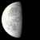 |
| 26 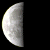 |
27 |
28 |
29 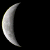 |
30 |
31 |